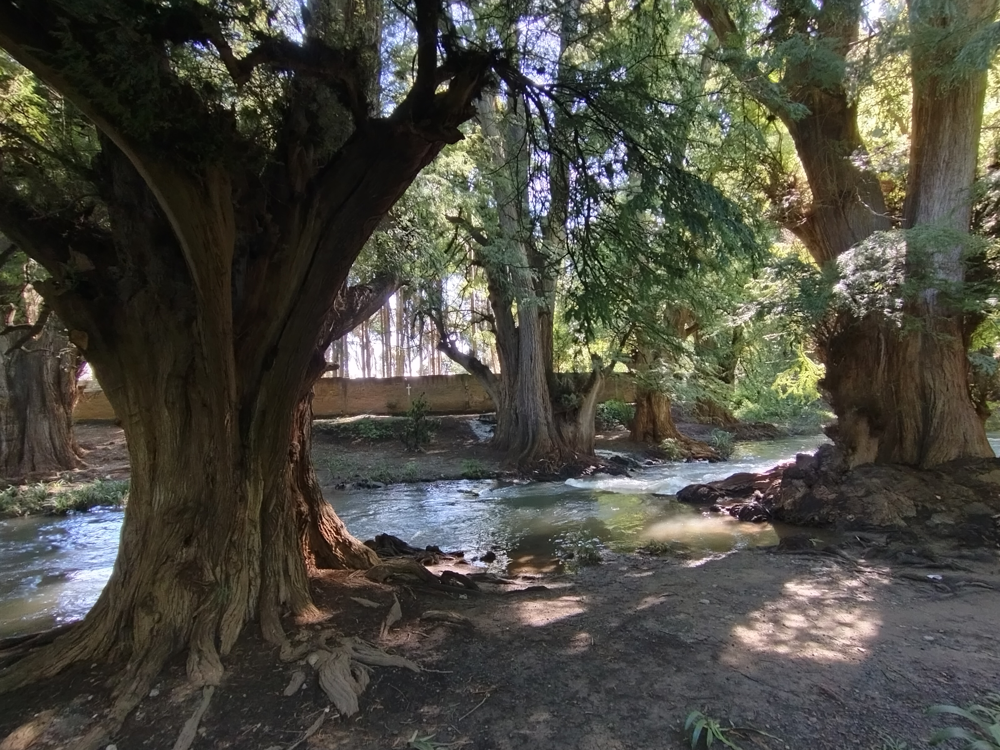
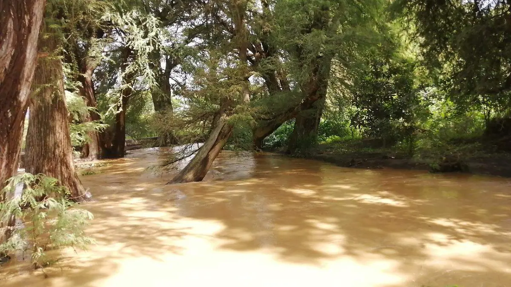

Camerino Z. Mendoza, Veracruz
Bachilleres América Diurna
IntroducciónEl cuidado del medio ambiente es un tema muy importante en la actualidad, ya que de él depende nuestra calidad de vida y la de las futuras generaciones. En Camerino Z. Mendoza contamos con un espacio natural muy valioso: el Río de los Ahuehuetes, un lugar que no solo es parte del paisaje de nuestra ciudad, sino también un símbolo de vida, historia y naturaleza.
Lamentablemente, este río enfrenta un grave problema de contaminación que ha ido aumentando con el paso del tiempo. En este proyecto se explica qué está pasando con el río, cuáles son las principales causas de su contaminación y qué acciones podemos tomar como estudiantes y ciudadanos para ayudar a su recuperación.
El Río de los Ahuehuetes atraviesa una zona donde crecen numerosos árboles de ahuehuete, también conocidos como “viejos del agua”. Estos árboles son muy importantes porque ayudan a mantener la humedad del suelo, protegen las orillas del río y sirven como refugio para distintas especies de animales.
Además, este lugar es un espacio donde las personas pueden caminar, convivir y disfrutar de la naturaleza. Por estas razones, cuidar el río no solo es una responsabilidad ambiental, sino también social.

La contaminación del Río de los Ahuehuetes no ocurre por una sola razón, sino por la combinación de varias acciones humanas que afectan directamente al ecosistema. Algunas de las principales causas son las siguientes:

La contaminación de este rio tiene multiples consecuencias negativas para el lugar y para nosotros como comunidad, algunas de estas son:
Para disminuir la contaminación del Río de los Ahuehuetes es necesario aplicar diferentes soluciones que ayuden a mejorar la calidad del agua y a conservar el ecosistema. Estas acciones no solo dependen de una sola persona, sino del trabajo en conjunto entre autoridades y comunidad.
El Río de los Ahuehuetes es parte de nuestra comunidad y de nuestra identidad. Si no actuamos ahora, el daño podría ser irreversible. Cuidar el río es cuidar nuestra salud, nuestro entorno y nuestro futuro.
El cambio comienza con nosotros.
Como estudiantes de primero de preparatoria, al realizar este proyecto nos dimos cuenta de que la contaminación del río no es un problema lejano, sino algo que sucede en nuestro propio municipio. Muchas veces pasamos por el lugar sin pensar en el impacto que tienen nuestras acciones diarias.
Investigar sobre el Río de los Ahuehuetes nos ayudó a entender que pequeñas acciones, como no tirar basura o participar en una limpieza, sí pueden generar cambios reales. Este trabajo nos dejó la idea de que cuidar el medio ambiente no solo es tarea de las autoridades, sino también responsabilidad de nosotros como jóvenes y ciudadanos.